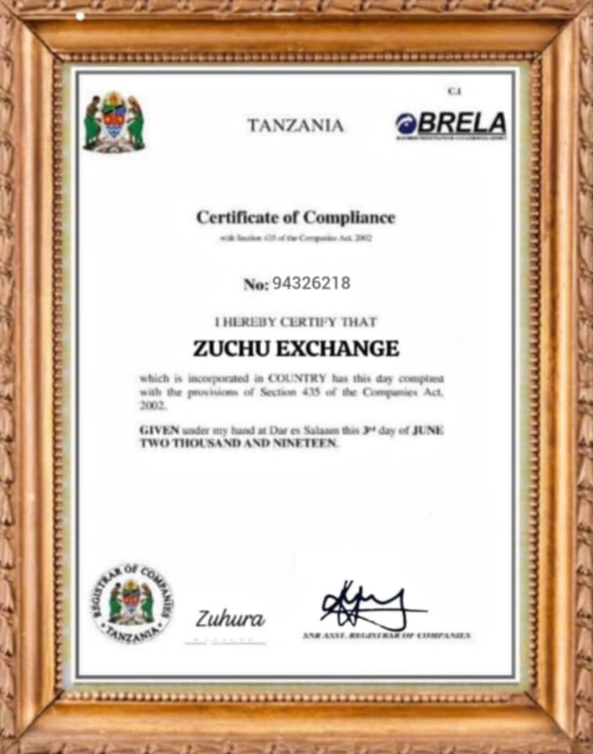

ZUCHU EXCHANGE. Ni kampuni inayotoa Mikopo Kwa njia ya Mtandao (online). Inayolenga kusaidia shabiki zangu na Tanzania. Tunatoa Mikopo NDANI ya dakika 15. Mkopo huu wa dharura tunatoa kupitia hii tovuti yetu unaruhisiwa kuomba Mkopo Kuanzia Laki Mbili 200,000/= Hadi Millioni Kumi 10,000,000/= (Vigezo & masharti kuzingatiwa) Mfuko huu wa Zuchu Exchange umeanzishwa katika mfumo wa intaneti pekee (Online).
ZUCHU EXCHANGE. Ni tasisi pekee Tanzania tunayoweza kukupatia Mkopo kupitia simu yako ya Mkononi tumewezshwa na sheria Ya miamala ya Electronic ya Tanzania mwaka 2017. Tumesajiliwa Kikamilifu TRA na BRELA namba ya usajili wa Cheti 50-22-65 iliojikita katika kutoa mikopo na ufadhili wa kifedha kwa watu wenye uhitaji Tanzania na zanzibar Utapata Mkopo hadi Million Kumi 10,000,000/=
UKIHITAJI MKOPO WA LAKIMBILI 200,000 AKIBA NI 22500 MDA WA KUREJESHA MIEZI 4.
MKOPO WA LAKI TATU 300,000 AKIBA 35000 MDA WA KUREJESHA MIEZI 5
MKOPO WA LAKI NNE 400,000 AKIBA 40,000 MDA WA KUREJESHA MIEZI 6
MKOPO WA LAKI TANO 500,000 AKIBA 50,000 MDA WA KUREJESHA MIEZI 7.
MKOPO WA SITA 600,000 AKIBA 60,000 MDA WA KUREJESHA MIEZI 8.
MKOPO WA SABA 700,000 AKIBA 70,000 MDA WA KUREJESHA MIEZI 9
MKOPO WA NANE 800,000 AKIBA 80,000 MDA WA KUREJESHA MIEZI 10.
MKOPO WA TISA 900,000 AKIBA 90,000 MDA WA KUREJESHA MIEZI 11.
MKOPO MILIONI MOJA 1,000,000 AKIBA 100,000 MDA WA KUREJESHA MIAKA 1.
MKOPO MILIONI MBILI 2,000,000 AKIBA 200,000 MDA WA KUREJESHA MIAKA 2.
MKOPO MILIONI TATU 3,000,000 AKIBA 300,000 MDA WA KUREJESHA MIAKA 3.
MKOPO NNE 4,000,000 AKIBA 400,000 MDA WA KUREJESHA MIAKA 4.
MKOPO TANO 5,000,000 AKIBA 500,000 MDA WA KUREJESHA MIAKA 5.
MKOPO SITA 6,000,000 AKIBA 600,000 MDA WA KUREJESHA MIAKA 6.
MKOPO SABA 7,000,000 AKIBA 700,000 MDA WA KUREJESHA MIAKA 7.
MKOPO NANE 8,000,000 AKIBA 800,000 MDA WA KUREJESHA MIAKA 8.
MKOPO TISA 9,000,000 AKIBA 900,000 MDA WA KUREJESHA MIAKA 9.
MKOPO KUMI 10,000,000 AKIBA 1,000,000 MDA WA KUREJESHA MIAKA 10
Utaratibu wetu kutoka kwenye taasisi Ya Zuchu Exchange ni shart la lazima kwa Kila mhitaji wa Mkopo kuweka Akiba?
1. Malipo haya huwa sehemu ya dhamana (security) ya Mkopo wako
2. Baada ya kulipa akiba unarejesha Mkopo bila riba kwa maana hiyo riba itakatwa katika akiba yako
Marejesho hufanyika Kila mwezi Pia unaruhusiwa kurejesha zaidi ya kiwango ili kuwai kumaliza deni kwa muda mchache